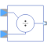
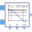

DivisionOutput first input divided by second input |

|
Information
This information is part of the Modelica Standard Library maintained by the Modelica Association.
This block computes the output y (element-wise)
by dividing the corresponding elements of
the two inputs u1 and u2. Optionally, either input u1 or u2 or both inputs can be processed conjugate complex, when parameters useConjugateInput1 and useConjugateInput2 are true, respectively. Depending on useConjugateInput1 and useConjugateInput2 the internal signals represent either the original or the conjugate complex input signal.
y = u1Internal / u2Internal;
Example: If useConjugateInput1 = true and useConjugateInput2 = false the output signal y = Modelica.ComplexMath.conj(u1) / u2.
Parameters (2)
| useConjugateInput1 |
Value: false Type: Boolean Description: If true, input 1 is processed conjugate complex |
|---|---|
| useConjugateInput2 |
Value: false Type: Boolean Description: If true, input 2 is processed conjugate complex |
Connectors (3)
| u1 |
Type: ComplexInput Description: Connector of Complex input signal 1 |
|
|---|---|---|
| u2 |
Type: ComplexInput Description: Connector of Complex input signal 2 |
|
| y |
Type: ComplexOutput Description: Connector of Complex output signal |
Components (2)
Used in Components (1)
|  |
Modelica.ComplexBlocks.ComplexMath Calculate quantities to plot Bode diagram |